<title>나의 인생 라멘가게</title>
<meta name="claude:viewport-fit-sides" content="cover">
<link rel="preconnect" href="https://fonts.googleapis.com">
<link rel="stylesheet" href="https://fonts.googleapis.com/css2?family=JetBrains+Mono:wght@400;500&display=swap">
<link rel="stylesheet" href="assets/site.css">
<canvas id="sky" aria-hidden="true"></canvas>
<nav class="nav" aria-label="섹션">
  <div class="wrap">
    <a class="back" href="index.html">← 김기백</a>
    <ul>
      <li><a href="#ramen">개요</a></li>
      <li><a href="#systems">시스템</a></li>
      <li><a href="#problems">문제 해결</a></li>
      <li><a href="#collab">협업</a></li>
    </ul>
  </div>
</nav>
<main>
<!-- 개요 -->
<section class="page" id="ramen">
  <div class="wrap">
    <div class="proj-head">
      <div class="stack-col" style="gap:14px">
        <span class="eyebrow">STAR 01 · TEAM PROJECT · 2026.09.04 ~ 09.17</span>
        <h2>나의 인생 라멘가게</h2>
        <p class="lead">손님이 돌려 말하는 주문을 해석해서 라멘을 만드는 2D 조리 퍼즐 게임. "초록색은 빼 주세요"가 파를 빼라는 뜻이라는 걸 알아내야 한다. 5일 동안 가게를 열고, 하루 매출 목표를 넘기면 다음 날로 넘어간다.</p>
      </div>
      <div class="btn-row">
        <a class="btn" href="https://youtu.be/pF59wLZO8Vk" target="_blank" rel="noopener">시연 영상 ↗</a>
        <a class="btn" href="https://github.com/TwincleStakey/Team_ramen" target="_blank" rel="noopener">GitHub 코드 ↗</a>
      </div>
    </div>
    <div class="yt" data-id="pF59wLZO8Vk" data-title="나의 인생 라멘가게 시연 영상">
      
      <button type="button" class="yt-play" aria-label="시연 영상 재생"><span>▶</span>시연 영상 재생</button>
    </div>
    <div class="facts">
      <div class="fact me"><span class="eyebrow">MY PART</span><b>메인 개발 · 조리부터 연출까지</b><p>조리 판정, 그릇과 도구 커서, 시식·해금·엔딩 연출, UI 전체, 화면을 코드로 짓는 에디터 툴. 그리고 팀원이 만든 주문·채점 시스템을 하나의 게임 루프로 이었다.</p></div>
      <div class="fact team"><span class="eyebrow">TEAM PROJECT</span><b>4명 · 2주 · 커밋 56/63</b><p>코드는 둘이 폴더 단위로 나눴다. 주문·대사·채점·정산은 팀원(<span class="mono">Customer/</span>), 그 밖은 내가 맡았다.</p></div>
      <div class="fact"><span class="eyebrow">STACK</span><b>사용 기술</b><p class="mono" style="font-size:13.5px">Unity 6000.3 · C# · URP<br>Input System · uGUI · TMP<br>Editor 스크립트 · Git LFS · Python</p></div>
    </div>

    <h3 class="sub-h">한 손님을 받는 흐름 <span class="cap" style="font-weight:400">· 사진을 누르면 크게 볼 수 있다</span></h3>
    <div class="loop" aria-label="한 손님을 받는 흐름">
      <figure><figcaption><span class="n">1</span><span><b>주문 듣기</b><br>손님이 사투리와 돌려 말하기로 주문한다</span></figcaption></figure>
      <figure><figcaption><span class="n">2</span><span><b>주문 해석</b><br>Tab으로 주문서, B로 레시피북을 연다</span></figcaption></figure>
      <figure><figcaption><span class="n">3</span><span><b>조리</b><br>타래 → 육수 → 면 → 토핑 순서로 담는다</span></figcaption></figure>
      <figure><figcaption><span class="n">4</span><span><b>시식 반응</b><br>정확도 구간마다 다른 연출이 나온다</span></figcaption></figure>
      <figure><figcaption><span class="n">5</span><span><b>하루 정산</b><br>목표 매출을 넘겨야 다음 날로 간다</span></figcaption></figure>
    </div>
  </div>
</section>

<!-- 핵심 시스템 -->
<section class="page" id="systems">
  <div class="wrap">
    <div class="sec-head">
      <span class="eyebrow">CORE SYSTEMS</span>
      <h2 class="h-sec">내가 만든 핵심 시스템</h2>
      <p class="lead">조리는 내가, 주문 생성과 채점은 팀원이 만들었다. 두 쪽이 서로의 내부를 모르게 하고, 함수 하나에서만 만나게 했다.</p>
    </div>
    <div class="legend"><span class="me"><i></i>내가 만든 것</span><span class="team"><i></i>팀원이 만든 것</span><span class="shared"><i></i>교집합</span></div>
    <div class="flow" role="img" aria-label="내가 만든 Bowl과 GameManager가 교집합인 EvaluateRamen을 거쳐 팀원이 만든 RamenCalculator와 DayManager로 이어진다">
      <div class="node me"><b>Bowl</b><span>담긴 재료</span></div><div class="arr">→</div>
      <div class="node me"><b>GameManager</b><span>화면 흐름</span></div><div class="arr">→</div>
      <div class="node shared"><b>EvaluateRamen()</b><span>교집합</span></div><div class="arr">→</div>
      <div class="node team"><b>RamenCalculator</b><span>채점</span></div><div class="arr">→</div>
      <div class="node team"><b>DayManager</b><span>일차·정산</span></div>
    </div>
    <div class="sys-grid">
      <div class="sys">
        <span class="eyebrow" style="font-size:16px">COOKING RULES</span>
        <h3>조리 판정: 순서와 상한을 그릇이 직접 막는다</h3>
        <p>타래 → 육수 → 면 순서가 아니면 그릇이 붉게 깜빡이며 받지 않는다. 토핑은 종류마다 최대 4개까지만 들어간다. 담긴 순서마다 위치와 각도를 정해 둔 자리표가 있어서, 최대 수량을 담아도 재료가 그릇 밖으로 넘치지 않는다.</p>
        <p>상한 4는 주문을 만드는 쪽과 조리 쪽이 같이 써야 하는 값이라 상수 하나로 묶었다. 처음에는 두 파일에 따로 적혀 있어서, 토핑 5개짜리 주문이 나오면 무조건 오답이 되는 버그가 있었다.</p>
      </div>
      <div class="sys">
        <span class="eyebrow" style="font-size:16px">SCENE BUILDER</span>
        <h3>메뉴 한 번으로 화면 전체를 다시 짓는 툴</h3>
        <p>조리 화면 UI를 손으로 배치하지 않고, 에디터 스크립트 <span class="mono">RamenLayoutBuilder</span>가 코드로 만들고 저장한다. 손으로 배치하면 사람마다 결과가 달라서 재현이 안 되고, 씬 파일 충돌도 난다.</p>
        <p>좌표와 글자 크기를 상수 한 곳에 모아 둬서, 해상도를 640×360에서 960×540으로 넓힐 때도 상수만 바꾸고 빌더를 다시 돌렸다.</p>
      </div>
      <div class="sys">
        <span class="eyebrow" style="font-size:16px">DAY DIFFICULTY</span>
        <h3>랜덤인데 난이도가 쏠리지 않게</h3>
        <p>손님마다 난이도를 따로 뽑으면, 하루 5~8명이라는 작은 표본에서는 첫날부터 어려운 손님만 나올 수 있었다. 일차별 구성을 표로 정하고, 가방에 넣고 섞어서 한 명씩 꺼내는 셔플 백으로 바꿨다.</p>
        <pre class="code"><span class="kw">private static readonly int</span>[][] DayDifficulties =
{
    <span class="kw">new</span>[] { 1, 1, 1, 1, 1 },
    <span class="kw">new</span>[] { 1, 1, 1, 2, 2 },
    <span class="kw">new</span>[] { 1, 1, 2, 2, 2, 3 },
    <span class="kw">new</span>[] { 1, 2, 2, 2, 3, 3 },
    <span class="kw">new</span>[] { 1, 2, 2, 3, 3, 3, 3, 3 }
};</pre>
      </div>
      <div class="sys">
        <span class="eyebrow" style="font-size:16px">FEEDBACK · TEMPO</span>
        <h3>손님 반응과 연출 배속</h3>
        <p>정확도 숫자만 보여 주면 뭘 틀렸는지 모른다. 그래서 손님 반응을 점수 구간이 아니라 어긋난 방향(빠짐 · 넘침 · 뒤바뀜)으로 골라 대사로 돌려준다.</p>
        <p>연출은 <span class="mono">Time.timeScale</span>을 안 타는 실시간 기준이라 빨리 감기가 안 먹었다. 연출 전용 배율 <span class="mono">CookTempo</span>를 따로 두고 연출 코드가 모두 그 값을 곱하게 했다.</p>
        <figure class="media-card"></figure>
      </div>
    </div>

    <h3 class="sub-h">짧게 잡은 문제들</h3>
    <div class="tbl"><table>
      <thead><tr><th>증상</th><th>원인</th><th>해결</th></tr></thead>
      <tbody>
        <tr><td>에디터에서는 되는데 빌드만 실패</td><td><span class="mono">#if UNITY_EDITOR</span> 안에서 선언하고 밖에서 사용</td><td>선언을 가드 밖으로 옮기고 같은 유형 26곳을 전부 확인</td></tr>
        <tr><td>토핑 5개짜리 주문은 무조건 오답</td><td>재료 상한이 두 파일에 따로 적혀 있음</td><td>상수 하나로 통일</td></tr>
        <tr><td>저장소를 새로 받으면 주문이 안 생김</td><td>빌더가 씬을 고치기만 하고 저장하지 않음</td><td>빌더가 저장까지 하도록 수정</td></tr>
        <tr><td>머지는 됐는데 씬이 조용히 깨짐</td><td>씬 파일을 줄 단위로 머지해 참조 ID가 어긋남</td><td><span class="mono">.gitattributes</span>에 <span class="mono">-merge</span>를 걸어 명시적 충돌로 전환</td></tr>
        <tr><td>Play 직후 간판 점등 연출이 안 보임</td><td>첫 프레임 하나가 4.27초. <span class="mono">unscaledDeltaTime</span>은 유니티가 잘라 주지 않음</td><td>한 프레임에 흘려보낼 시간을 0.05초로 제한</td></tr>
      </tbody>
    </table></div>
  </div>
</section>

<!-- 문제 해결 -->
<section class="page" id="problems">
  <div class="wrap">
    <div class="sec-head">
      <span class="eyebrow">TROUBLESHOOTING</span>
      <h2 class="h-sec">가장 오래 붙잡은 버그 세 개</h2>
      <p class="lead">셋 다 한 번에 안 잡혔다. 자세히 보기를 누르면 증상, 헛짚었던 시도, 원인 그림, 바뀐 코드, 고치기 전과 후, 배운 것이 차례로 열린다. 사진은 누르면 커진다. <span class="cap">실제 화면은 "실제 화면", 내가 다시 그리거나 합성한 건 "재구성"·"그림"으로 표시했다.</span></p>
    </div>

    <!-- A -->
    <article class="prob" id="prob-a">
      <div class="prob-sum">
        <div class="txt">
          <span class="tag">A · 엔딩 연출 · 제출 전날</span>
          <h3>엔딩 크레딧이 끝까지 재생되지 않았다</h3>
          <div class="chips"><span class="chip">진행 순서의 주인</span><span class="chip">부모 좌표계</span><span class="chip">비활성 오브젝트</span><span class="chip">전역 상태</span><span class="chip">픽셀 측정</span></div>
          <dl class="star4">
            <dt>상황</dt><dd>크레딧을 끝까지 돌려 보니 네 가지가 동시에 어긋났다. 손님이 쓰러지기 전에 화면이 검어지고, 아이리스가 엉뚱한 곳을 조이고, 마지막 그릇이 비어 있고, 검은 화면 옆에 갈색 띠가 남았다.</dd>
            <dt>시도</dt><dd>여섯 번. 갈색 띠는 세 번 헛짚은 뒤에 잡혔다.</dd>
            <dt>원인</dt><dd>버그 하나가 아니라 넷이었다. 고정 타이머가 끝을 정했고, 좌표 변환이 두 번 걸렸고, 끝나지 않은 튜토리얼이 재료를 막았고, 갈색 띠는 같이 줄어든 비네트 그림이었다.</dd>
            <dt>결과</dt><dd class="res">아이리스 중심 오차 ±1px, 창 바깥 검정 아닌 픽셀 0개.</dd>
          </dl>
          <button class="btn more" type="button" aria-expanded="false" aria-controls="det-a">자세히 보기 ▾</button>
        </div>
        <figure><figcaption class="cap">실제 화면. 검은 화면에 갈색 띠가 남은 상태</figcaption></figure>
      </div>
      <div class="detail" id="det-a" hidden>
        <div class="tabs" role="tablist" aria-label="A 자세히"></div>

        <div class="panel" role="tabpanel" data-label="증상">
          <h4>01 증상</h4>
          <p class="lead" style="font-size:17px;margin-bottom:18px">엔딩 크레딧은 왼쪽에 제작진 이름이 흐르고, 오른쪽 작은 창에서 마지막 손님이 라멘을 네 그릇 먹다가 쓰러지는 장면이다. 까마귀가 내려앉으면 그 까마귀를 중심으로 화면이 동그랗게 오므라들고(아이리스), 마지막으로 조리 화면이 한 번 비친 뒤 끝나야 했다.</p>
          <div class="sym-grid">
            <figure class="media-card"><span class="src">재구성</span><figcaption><b><span class="num">①</span>손님이 쓰러지기도 전에 화면이 검어진다</b>마지막 장면까지 가지도 못하고 끝난다.</figcaption></figure>
            <figure class="media-card">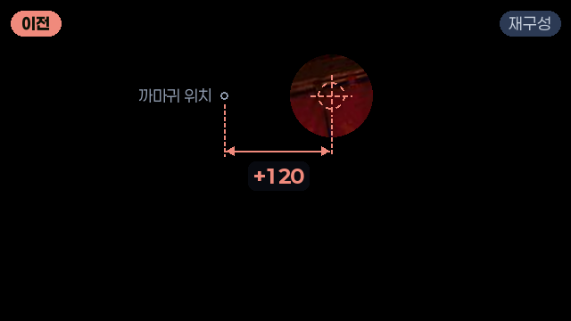<span class="src">재구성</span><figcaption><b><span class="num">②</span>아이리스가 까마귀가 아닌 빈 곳을 조인다</b>까마귀는 검은 화면 속에 묻혀 버린다.</figcaption></figure>
            <figure class="media-card"><span class="src real">실제 화면</span><figcaption><b><span class="num">③</span>마지막 조리 화면의 라멘이 비어 있다</b>"오늘 밤도, 불을 밝힙니다." 뒤에 있어야 할 라멘이 없다.</figcaption></figure>
            <figure class="media-card"><span class="src real">실제 화면</span><figcaption><b><span class="num">④</span>검은 화면 옆에 갈색 띠가 남는다</b>창 둘레로 갈색 네모가 비친다.</figcaption></figure>
          </div>
        </div>

        <div class="panel" role="tabpanel" data-label="시도 과정">
          <h4>02 시도 과정</h4>
          <ol class="tries">
            <li class="fail">
              <div class="try-h"><span class="try-n">1</span><b>배경이 화면보다 커서 비친다고 봤다</b><span class="tag-x">그대로</span></div>
              <div class="try-media"><figure class="media-card"><span class="src real">실제 화면 · 이때 본 화면</span></figure></div>
              <p><span class="k">WHY</span><span>조리대 배경 그림이 화면 전체로 늘어나 있었다. 16:9가 아닌 창이면 바깥에 나무가 깔린다.</span></p>
              <p><span class="k">DID</span><span>배경을 960×540 판에 맞추고, 바깥은 카메라 배경색을 검정으로 바꿨다. 같이 고친 것: 끝맺음을 카드 시계에서 무대로 넘김(①), 그릇 다시 켜기(③).</span></p>
              <p><span class="k">RESULT</span><span>①은 좋아졌는데 갈색 띠는 그대로였다.</span></p>
            </li>
            <li class="fail">
              <div class="try-h"><span class="try-n">2</span><b>검은 판이 화면 일부만 덮는다고 봤다</b><span class="tag-x">아님</span></div>
              <div class="try-media"><figure class="media-card">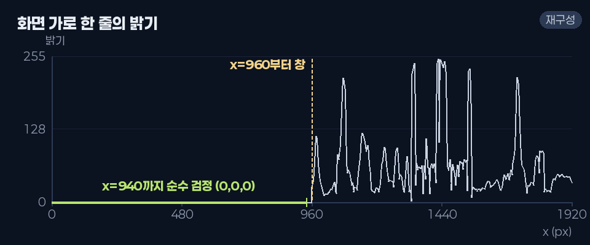<span class="src">그림 · 측정값 재구성</span></figure></div>
              <p><span class="k">WHY</span><span>예전에 검은 판이 화면 왼쪽만 덮는 걸 본 적이 있었다.</span></p>
              <p><span class="k">DID</span><span>이번엔 고치기 전에 쟀다. 화면을 가로로 한 줄 훑으니 x=940까지 순수 검정(0,0,0), x=960부터 창이었다.</span></p>
              <p><span class="k">RESULT</span><span>검은 판은 멀쩡했다. 갈색은 창 안쪽 문제로 보고, 가게가 다 서기 전까지 창을 감췄다. 그래도 그대로.</span></p>
            </li>
            <li class="fail">
              <div class="try-h"><span class="try-n">3</span><b>밤 배경 그림이 창보다 크다고 봤다</b><span class="tag-x">그대로</span></div>
              <p><span class="k">WHY</span><span>포장마차의 밤 배경(<span class="mono">Night</span>)이 판보다 크게 잡혀 있었다.</span></p>
              <p><span class="k">DID</span><span>판 크기로 줄였다. 같은 때 빈 그릇(③)은 재료통을 먼저 끄고 담아서 생긴 문제로 보고 순서를 바꿨다.</span></p>
              <p><span class="k">RESULT</span><span>갈색 띠도, 빈 그릇도 그대로. "아직도 갈색화면이랑 검은화면 구분되잖아"가 세 번째였다.</span></p>
            </li>
            <li class="fail">
              <div class="try-h"><span class="try-n">4</span><b>빈 그릇을 조리 화면 그릇 복제로 덮으려 했다</b><span class="tag-x">되돌림</span></div>
              <div class="try-media"><figure class="media-card">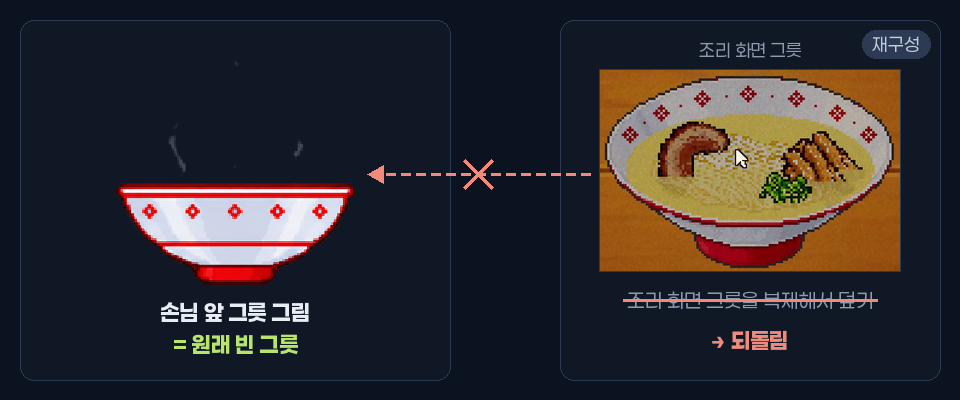<span class="src">그림</span></figure></div>
              <p><span class="k">WHY</span><span>손님 앞 그릇 그림 자체가 빈 그릇이었다. 그래서 조리 화면에서 만든 그릇을 가져다 보여 주면 된다고 생각했다.</span></p>
              <p><span class="k">DID</span><span>조리 화면 그릇을 손님 화면에 복제해 보여 주는 장치를 켰다.</span></p>
              <p><span class="k">RESULT</span><span>손님 화면에 조리 화면 물건을 끌어오는 건 잘못된 구조라 되돌렸다. 원인을 덮는 거지 고치는 게 아니었다.</span></p>
            </li>
            <li class="ok">
              <div class="try-h"><span class="try-n">5</span><b>담는 쪽이 아니라 받는 쪽을 봤다</b><span class="tag-o">원인 ③</span></div>
              <div class="try-media"><figure class="fig" style="margin:0">
                <svg viewBox="0 0 520 150" role="img" aria-label="재료를 담으려 하면 CanPick이 거절하는 흐름">
                  <defs><marker id="arA" viewBox="0 0 10 10" refX="9" refY="5" markerWidth="7" markerHeight="7" orient="auto"><path d="M0 0L10 5L0 10z" class="f-mute"/></marker></defs>
                  <rect x="6" y="20" width="136" height="50" rx="8" class="f-panel s-line2"/>
                  <text x="74" y="50" class="t-sm" text-anchor="middle">재료 담기</text>
                  <line x1="142" y1="45" x2="186" y2="45" class="s-mute" marker-end="url(#arA)"/>
                  <rect x="188" y="20" width="170" height="50" rx="8" class="f-panel s-warn"/>
                  <text x="273" y="41" class="t-sm" text-anchor="middle">CanPick(type)</text>
                  <text x="273" y="61" class="t-warn" text-anchor="middle">튜토리얼 진행 중</text>
                  <line x1="358" y1="45" x2="400" y2="45" class="s-mute" marker-end="url(#arA)"/>
                  <rect x="402" y="20" width="112" height="50" rx="8" class="f-panel s-bad"/>
                  <text x="458" y="50" class="t-bad" text-anchor="middle">거절 → 빈 그릇</text>
                  <text x="6" y="116" class="t-sm">안내 중인 재료 하나 말고 전부 false.</text>
                </svg></figure></div>
              <p><span class="k">WHY</span><span>담기 함수는 불리는데 그릇에 들어간 재료가 0개였다. 보내는 쪽이 멀쩡하면 받는 쪽이 거절하고 있는 거다.</span></p>
              <p><span class="k">DID</span><span>그릇이 재료를 받기 전에 확인하는 조건을 따라갔다.</span></p>
              <p><span class="k">RESULT</span><span>튜토리얼이 "진행 중"이면 <span class="mono">TutorialManager.CanPick()</span>이 안내 중인 재료 말고 전부 거절한다. 개발 키로 크레딧에 바로 들어가면 튜토리얼이 안 끝난 상태였다.</span></p>
            </li>
            <li class="ok">
              <div class="try-h"><span class="try-n">6</span><b>눈으로 보기를 그만두고 녹화를 프레임마다 쟀다</b><span class="tag-o">원인 ② ④</span></div>
              <div class="try-media"><figure class="fig" style="margin:0">
                <svg viewBox="0 0 520 210" role="img" aria-label="갈색 영역이 정확히 480 곱하기 270이고 이는 화면의 절반 크기">
                  <defs><radialGradient id="vgA" cx="50%" cy="50%" r="65%"><stop offset="55%" stop-color="#1a0d09" stop-opacity="0"/><stop offset="100%" stop-color="#3a1d12"/></radialGradient></defs>
                  <rect x="10" y="10" width="500" height="190" rx="6" class="f-black"/>
                  <rect x="250" y="48" width="240" height="135" fill="url(#vgA)"/>
                  <rect x="262" y="60" width="216" height="111" rx="3" class="f-shop"/>
                  <rect x="250" y="48" width="240" height="135" class="s-warn" fill="none" stroke-dasharray="5 4"/>
                  <text x="370" y="38" class="t-warn" text-anchor="middle">잰 값: 480×270 · RGB(22,11,8)</text>
                  <text x="22" y="84" class="t-sm">아이리스 중심도 재 보니</text>
                  <text x="22" y="108" class="t-bad">기대값보다 x +120</text>
                </svg></figure></div>
              <p><span class="k">WHY</span><span>같은 갈색 띠를 세 번 고쳤는데 세 번 다 그대로였다. 짐작이 틀리고 있다는 뜻이라, 짐작 말고 숫자가 필요했다.</span></p>
              <p><span class="k">DID</span><span>플레이를 823장으로 녹화하고, 아이리스 원의 중심과 갈색 영역의 크기·색을 픽셀로 쟀다.</span></p>
              <p><span class="k">RESULT</span><span>아이리스 중심은 정확히 x +120 밀려 있었고, 갈색 영역은 정확히 480×270, RGB(22,11,8)이었다. 숫자를 보자마자 둘 다 어디서 왔는지 보였다.</span></p>
            </li>
          </ol>
        </div>

        <div class="panel" role="tabpanel" data-label="원인 그림">
          <h4>03 원인 그림</h4>
          <div class="figs">
            <figure class="fig">
              <svg viewBox="0 0 520 190" role="img" aria-label="카드 시계는 40초에 끝나고 무대는 그 뒤로도 이어지는 타임라인">
                <text x="0" y="40" class="t-mute">카드 시계</text>
                <rect x="90" y="24" width="250" height="24" rx="4" class="f-line"/>
                <text x="215" y="41" class="t-sm" text-anchor="middle">이름 카드 9장</text>
                <line x1="340" y1="14" x2="340" y2="120" class="s-bad" stroke-dasharray="4 4"/>
                <text x="346" y="18" class="t-bad">40초 · 화면 검게</text>
                <text x="0" y="92" class="t-mute">무대</text>
                <rect x="90" y="76" width="210" height="24" rx="4" class="f-lime"/>
                <text x="195" y="93" class="t-dark" text-anchor="middle">네 그릇 먹기</text>
                <rect x="302" y="76" width="70" height="24" rx="4" class="f-lime2"/>
                <rect x="374" y="76" width="64" height="24" rx="4" class="f-lime2"/>
                <rect x="440" y="76" width="74" height="24" rx="4" class="f-lime2"/>
                <rect x="340" y="70" width="176" height="36" class="f-cut"/>
                <text x="372" y="124" class="t-bad" text-anchor="middle">쓰러짐 · 까마귀 · 아이리스가 잘림</text>
                <text x="90" y="158" class="t-sm">고친 뒤: 카드 시계는 글자만 맡고,</text>
                <text x="90" y="180" class="t-lime">화면을 검게 하는 건 아이리스가 끝난 뒤 무대가 한다</text>
              </svg>
              <figcaption><b>① 끝을 누가 정하나</b>이름 카드가 다 지나가는 40초에 화면이 검어졌다. 손님이 먹는 시간은 그때그때 다르다.</figcaption>
            </figure>
            <figure class="fig">
              <svg viewBox="0 0 520 210" role="img" aria-label="Frame 안의 까마귀 위치와 한 번 더 변환해 120칸 밀린 위치">
                <rect x="10" y="10" width="500" height="190" rx="6" class="f-black"/>
                <text x="22" y="34" class="t-mute">화면</text>
                <rect x="250" y="50" width="245" height="138" rx="4" class="f-frame"/>
                <text x="260" y="72" class="t-sm">Frame (×0.5, +240)</text>
                <circle cx="320" cy="130" r="9" class="f-lime"/>
                <text x="320" y="166" class="t-lime" text-anchor="middle">까마귀</text>
                <circle cx="320" cy="130" r="26" class="s-lime" fill="none"/>
                <circle cx="440" cy="130" r="9" class="f-bad"/>
                <circle cx="440" cy="130" r="26" class="s-bad" fill="none" stroke-dasharray="4 3"/>
                <text x="440" y="176" class="t-bad" text-anchor="middle">조여진 곳</text>
                <line x1="332" y1="104" x2="428" y2="104" class="s-warn"/>
                <text x="380" y="96" class="t-warn" text-anchor="middle">+120</text>
                <text x="22" y="70" class="t-sm">변환을 한 번 더 걸면</text>
                <text x="22" y="92" class="t-sm">240 × 0.5 = 120칸</text>
                <text x="22" y="114" class="t-bad">오른쪽으로 밀린다</text>
              </svg>
              <figcaption><b>② 같은 부모 안에서 변환을 한 번 더</b>까마귀와 아이리스 판은 둘 다 Frame의 자식이다. Frame을 줄이고 옮긴 효과는 이미 둘에게 똑같이 걸려 있다.</figcaption>
            </figure>
            <figure class="fig">
              <svg viewBox="0 0 520 150" role="img" aria-label="재료를 담으려 하면 CanPick이 거절하는 흐름">
                <defs><marker id="ar" viewBox="0 0 10 10" refX="9" refY="5" markerWidth="7" markerHeight="7" orient="auto"><path d="M0 0L10 5L0 10z" class="f-mute"/></marker></defs>
                <rect x="6" y="20" width="136" height="50" rx="8" class="f-panel s-line2"/>
                <text x="74" y="50" class="t-sm" text-anchor="middle">재료 담기</text>
                <line x1="142" y1="45" x2="186" y2="45" class="s-mute" marker-end="url(#ar)"/>
                <rect x="188" y="20" width="170" height="50" rx="8" class="f-panel s-warn"/>
                <text x="273" y="41" class="t-sm" text-anchor="middle">CanPick(type)</text>
                <text x="273" y="61" class="t-warn" text-anchor="middle">튜토리얼 진행 중</text>
                <line x1="358" y1="45" x2="400" y2="45" class="s-mute" marker-end="url(#ar)"/>
                <rect x="402" y="20" width="112" height="50" rx="8" class="f-panel s-bad"/>
                <text x="458" y="50" class="t-bad" text-anchor="middle">거절 → 빈 그릇</text>
                <text x="6" y="110" class="t-sm">안내 중인 재료 하나 말고 전부 false.</text>
                <text x="6" y="134" class="t-lime">크레딧이 시작될 때 튜토리얼을 끝난 것으로 처리했다.</text>
              </svg>
              <figcaption><b>③ 끝나지 않은 튜토리얼</b>개발 키로 크레딧에 바로 들어가면 튜토리얼 상태가 남아 있었다.</figcaption>
            </figure>
            <figure class="fig">
              <svg viewBox="0 0 520 210" role="img" aria-label="Frame을 절반으로 줄이면 그 밑의 비네트 그림도 480 곱하기 270으로 줄어 갈색 띠로 보인다">
                <defs><radialGradient id="vg" cx="50%" cy="50%" r="65%"><stop offset="55%" stop-color="#1a0d09" stop-opacity="0"/><stop offset="100%" stop-color="#3a1d12"/></radialGradient></defs>
                <rect x="10" y="10" width="500" height="190" rx="6" class="f-black"/>
                <rect x="250" y="48" width="240" height="135" fill="url(#vg)"/>
                <rect x="262" y="60" width="216" height="111" rx="3" class="f-shop"/>
                <text x="370" y="120" class="t-sm" text-anchor="middle">가게 창</text>
                <rect x="250" y="48" width="240" height="135" class="s-warn" fill="none" stroke-dasharray="5 4"/>
                <text x="370" y="38" class="t-warn" text-anchor="middle">비네트 480×270 = 960×540 × 0.5</text>
                <text x="22" y="84" class="t-sm">검은 바탕 위에</text>
                <text x="22" y="106" class="t-sm">가장자리만 갈색(22,11,8)</text>
                <text x="22" y="128" class="t-bad">→ 네모난 띠로 보였다</text>
              </svg>
              <figcaption><b>④ 같이 줄어든 비네트</b>화면 가장자리를 어둡게 누르는 비네트는 후처리가 아니라 Frame 밑에 깔린 그림 한 장이었다.</figcaption>
            </figure>
          </div>
        </div>

        <div class="panel" role="tabpanel" data-label="코드 변경">
          <h4>04 코드 변경</h4>
          <div class="stack-col" style="gap:26px">
            <div>
              <div class="code2"><div class="hd"><span class="file">CreditsSequence.cs</span><span class="fn">CrowCloses()</span><span class="cause2">원인 ② 좌표 변환을 두 번</span><span class="what">엔딩 크레딧 장면 전체를 순서대로 진행하는 파일. CrowCloses()는 까마귀가 앉으면 그 자리를 중심으로 화면을 오므리는 부분이다.</span></div>
<ol>
<li>Vector2 spot = cutscene != <span class="kw">null</span> ? cutscene.CrowSpot : Vector2.zero;</li>
<li class="del"><span class="kw">yield return</span> iris.CloseTo(spot * StageScale + StageCenter, IrisCloseSeconds);</li>
<li class="add"><span class="kw">yield return</span> iris.CloseTo(spot, IrisCloseSeconds);</li>
</ol></div>
              <ul class="notes">
                <li><span class="ln">1</span><span><span class="mono">spot</span>은 까마귀가 앉은 자리다. Frame(오른쪽 작은 창) 안에서의 좌표.</span></li>
                <li><span class="ln del">2 지움</span><span>창의 축소(<span class="mono">StageScale</span> = 0.5)와 이동(<span class="mono">StageCenter</span> = +240)을 직접 한 번 더 곱했다. 아이리스 판도 같은 Frame 안이라 이미 걸려 있는 변환이어서, 결과가 오른쪽으로 120칸 밀렸다.</span></li>
                <li><span class="ln add">3 추가</span><span>같은 Frame 안끼리는 좌표를 그대로 넘긴다.</span></li>
              </ul>
            </div>
            <div>
              <div class="code2"><div class="hd"><span class="file">CreditsSequence.cs</span><span class="fn">HideStageUi()</span><span class="cause2">원인 ③ 끝나지 않은 튜토리얼</span><span class="what">같은 파일. HideStageUi()는 크레딧이 시작될 때 게임 화면의 안내 UI를 치우는 함수다.</span></div>
<ol>
<li>Transform frame = FindFrame();</li>
<li><span class="kw">if</span> (frame == <span class="kw">null</span>) <span class="kw">return</span>;</li>
<li class="add"><span class="kw">if</span> (TutorialManager.Instance != <span class="kw">null</span> &amp;&amp; TutorialManager.Instance.IsRunning)</li>
<li class="add">{</li>
<li class="add">    TutorialManager.Instance.Finish();</li>
<li class="add">}</li>
</ol></div>
              <ul class="notes">
                <li><span class="ln add">3–6 추가</span><span>튜토리얼이 아직 진행 중이면 끝난 것으로 처리한다. 진행 중이면 <span class="mono">CanPick()</span>이 안내 중인 재료 말고 전부 거절해서, 크레딧의 마지막 그릇이 비어 있었다.</span></li>
              </ul>
            </div>
            <div>
              <div class="code2"><div class="hd"><span class="file">CreditsSequence.cs</span><span class="fn">FrameHidden</span><span class="cause2">원인 ④ 같이 줄어든 비네트</span><span class="what">같은 파일. FrameHidden은 크레딧 동안 꺼 둘 화면 요소 이름 목록이다.</span></div>
<ol>
<li><span class="kw">public static readonly string</span>[] FrameHidden =</li>
<li>{</li>
<li>    <span class="st">"TitleScreen"</span>, <span class="st">"KeyHint_Tab"</span>, <span class="st">"KeyHint_Book"</span>, <span class="st">"HoldToSkip"</span>, <span class="st">"DragLayer"</span>,</li>
<li>    <span class="st">"TutorialPrompt"</span>, <span class="st">"TutorialDim"</span>,</li>
<li class="add">    <span class="st">"ScreenVignette"</span>, <span class="st">"ScreenGrain"</span>,</li>
<li>};</li>
</ol></div>
              <ul class="notes">
                <li><span class="ln add">5 추가</span><span>가장자리를 어둡게 누르는 비네트와 화면 알갱이. Frame과 같이 절반으로 줄어서 창 둘레에 갈색 띠로 남던 그림이라, 크레딧 동안 끈다.</span></li>
              </ul>
            </div>
            <p class="mute" style="font-size:15.5px">원인 ①은 이름 카드를 움직이는 함수(<span class="mono">SeekTo</span>)에서 검은 판과 창을 건드리던 코드를 빼고, 끝맺음 코루틴(<span class="mono">PlayEnding</span>)만 화면을 검게 하도록 옮겼다.</p>
          </div>
        </div>

        <div class="panel" role="tabpanel" data-label="고치기 전과 후">
          <h4>05 고치기 전과 후</h4>
          <div class="ba-block">
            <div class="ba-pair">
              <figure class="media-card"><span class="src">재구성 · <span class="tag-b">이전</span></span></figure>
              <figure class="media-card">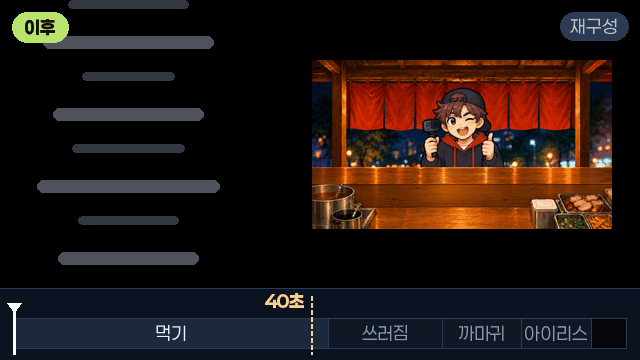<span class="src">재구성 · <span class="tag-a">이후</span></span></figure>
            </div>
            <h5>① 화면이 언제 검어지나</h5>
            <p>아래 흰 선이 시간이다. 이전에는 40초 표시에서 화면이 통째로 검어져서 쓰러짐·까마귀·아이리스가 다 잘린다. 이후에는 아이리스가 끝난 뒤에야 검어진다.</p>
          </div>
          <div class="ba-block">
            <div class="ba-pair">
              <figure class="media-card">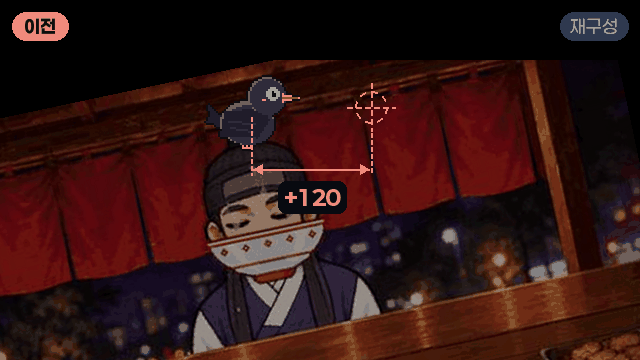<span class="src">재구성 · <span class="tag-b">이전</span></span></figure>
              <figure class="media-card">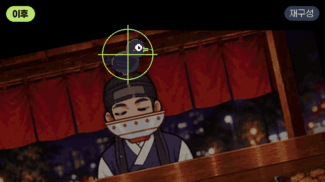<span class="src">재구성 · <span class="tag-a">이후</span></span></figure>
            </div>
            <h5>② 아이리스가 어디로 오므라드나</h5>
            <p>이전에는 까마귀에서 오른쪽으로 120칸 떨어진 곳으로 닫혀서 까마귀가 어둠에 묻혔다. 이후에는 까마귀를 가운데 두고 닫힌다.</p>
          </div>
          <div class="ba-block">
            <div class="ba-pair">
              <figure class="media-card"><span class="src real">실제 화면 · <span class="tag-b">이전</span></span></figure>
              <figure class="media-card">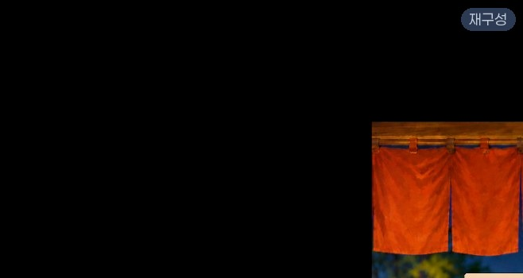<span class="src">재구성 · <span class="tag-a">이후</span></span></figure>
            </div>
            <h5>③ 창 둘레의 갈색 띠</h5>
            <p>비네트를 크레딧 동안 끄니 창 바깥이 전부 순수 검정이 됐다. 고친 뒤 창 바깥 영역을 전부 훑어 검정이 아닌 픽셀이 0개인 걸 확인했다.</p>
          </div>
          <div class="two" style="margin-top:18px">
            <div class="stack-col" style="gap:12px">
              <p class="lead" style="font-size:17px">아이리스는 고친 뒤 다시 녹화해서 같은 자리를 쟀다. 기대값은 화면 x = 1440(캔버스 x 240).</p>
              <div class="tbl num"><table style="min-width:0">
                <thead><tr><th>프레임</th><th>아이리스 중심</th><th>지름</th></tr></thead>
                <tbody class="mono">
                  <tr><td>618</td><td>1441, 532</td><td>458</td></tr>
                  <tr><td>620</td><td>1440, 527</td><td>280</td></tr>
                  <tr><td>622</td><td>1439, 527</td><td>134</td></tr>
                </tbody>
              </table></div>
            </div>
            <ul class="checks">
              <li><span class="ok">✓</span><span>창 바깥 검정이 아닌 픽셀 0개</span></li>
              <li><span class="ok">✓</span><span>손님이 쓰러지고 까마귀가 앉은 뒤에 검어진다</span></li>
              <li><span class="ok">✓</span><span>마지막 조리 화면 그릇에 토핑까지 담긴다</span></li>
              <li><span class="ok">✓</span><span>크레딧이 끈 것만 되돌리는 리셋 메뉴를 만들어서, 확인하다가 다른 화면을 망가뜨리지 않게 했다</span></li>
            </ul>
          </div>
        </div>

        <div class="panel" role="tabpanel" data-label="배운 것">
          <h4>06 배운 것</h4>
          <div class="lessons">
            <div class="lesson has-media">
              <div class="lm"></div>
              <b>길이가 다른 흐름이 둘이면, 끝을 누가 정하는지부터 정한다</b><span>크레딧에는 고정 길이 흐름(이름 카드, 노래)과 가변 길이 흐름(손님 연출)이 같이 돌았다. 고정 쪽이 끝을 쥐면 가변 쪽이 길어지는 순간 잘린다. 이제 연출을 짤 때 "이 장면을 끝내는 건 누구인가"를 먼저 하나로 정하고, 나머지는 그 신호를 따라가게 만든다.</span>
            </div>
            <div class="lesson has-media">
              <div class="anim lm"><div class="frame-demo"><div class="fr"><span>Frame</span><span class="crow2"></span><span class="ghost"></span></div><span class="leg">초록 = 그대로 넘김 · 빨강 = 한 번 더 변환</span></div></div>
              <b>좌표를 넘길 때는 "어느 공간의 좌표인가"를 같이 본다</b><span>점선 상자(Frame)가 줄어들며 옮겨 갈 때 안에 있는 초록 점은 같이 따라간다. 부모의 크기·위치 변화는 자식 모두에 그대로 곱해지기 때문이다. 그래서 같은 부모 아래끼리는 로컬 좌표를 그대로 주고받고, 다른 부모로 넘길 때만 변환한다. "혹시 몰라서" 한 번 더 바꾸면 빨간 점처럼 밀린다.</span>
            </div>
            <div class="lesson"><b>개발 키로 중간부터 시작하면 앞 단계의 상태가 남는다</b><span>테스트용으로 크레딧에 바로 들어가는 키를 만들었는데, 그 사이에 끝났어야 할 튜토리얼 상태가 그대로였다. 중간 진입 키를 만들면 "여기까지 정상적으로 왔다면 어떤 상태여야 하나"를 맞춰 주는 코드를 같이 넣어야 한다.</span></div>
            <div class="lesson"><b>원인을 덮는 수정은 되돌린다</b><span>빈 그릇을 다른 그릇 복제로 가리면 화면은 맞아도 원인은 남는다. 거절하는 조건을 찾는 게 맞는 방향이었다.</span></div>
            <div class="lesson has-media">
              <div class="lm"></div>
              <b>세 번 헛짚으면 짐작을 멈추고 잰다</b><span>갈색 띠는 짐작으로 세 번 놓쳤고, 480×270이라는 숫자 하나로 잡혔다. 재 보기 전에는 "어떤 그림이 이 크기일까"라는 질문 자체를 할 수 없었다. 이제 화면 버그가 두 번 넘게 안 잡히면 녹화하고 값을 잰다.</span>
            </div>
          </div>
        </div>
      </div>
    </article>

    <!-- B -->
    <article class="prob" id="prob-b">
      <div class="prob-sum">
        <div class="txt">
          <span class="tag">B · 좌표계 · 생명주기</span>
          <h3>커서가 사라지고, 둘째 손님부터 조작이 멈췄다</h3>
          <div class="chips"><span class="chip">Canvas Render Mode</span><span class="chip">화면 → 월드 좌표</span><span class="chip">Awake / OnEnable</span><span class="chip">싱글턴 Instance</span></div>
          <dl class="star4">
            <dt>상황</dt><dd>재료통 위에 마우스를 올리면 커서가 사라졌다. 시식 연출이 한 번 지나가면 재료도 안 집히고 커서가 기본 화살표에서 안 바뀌었다.</dd>
            <dt>시도</dt><dd>세 번. 두 번은 그리기 순서 문제로 잘못 봤다.</dd>
            <dt>원인</dt><dd>원인 두 개가 겹쳐 있었다. Canvas를 Screen Space - Camera로 바꾼 뒤에도 마우스 픽셀 좌표를 그대로 넣어서 커서가 화면 밖으로 나갔고, 커서 등록이 한 번만 불리는 Awake에 있어서 연출이 커서를 껐다 켜면 등록이 사라졌다.</dd>
            <dt>결과</dt><dd class="res">좌표 변환 네 곳을 하나로 모으고 등록을 OnEnable로 옮겨서, 연출 뒤에도 조리가 이어진다.</dd>
          </dl>
          <button class="btn more" type="button" aria-expanded="false" aria-controls="det-b">자세히 보기 ▾</button>
        </div>
        <figure><figcaption class="cap">실제 화면. 재료통 위에 마우스가 있는데 커서가 없다</figcaption></figure>
      </div>
      <div class="detail" id="det-b" hidden>
        <div class="tabs" role="tablist" aria-label="B 자세히"></div>

        <div class="panel" role="tabpanel" data-label="증상">
          <h4>01 증상</h4>
          <p class="lead" style="font-size:17px;margin-bottom:18px">조리 화면에서는 시스템 마우스 커서를 끄고, 재료에 따라 젓가락·국자 모양의 그림 커서(<span class="mono">CookingCursor</span>)를 대신 그린다.</p>
          <div class="sym-grid">
            <figure class="media-card"><span class="src real">실제 화면</span><figcaption><b><span class="num">①</span>재료통 위로 가면 커서가 사라진다</b>그림 커서도, 기본 화살표도 안 보인다. 어디를 가리키는지 알 수가 없다.</figcaption></figure>
            <figure class="media-card"><span class="src real">실제 화면</span><figcaption><b><span class="num">②</span>시식 연출이 지나가면 재료가 안 집힌다</b>첫 손님은 되는데, 이 장면 뒤로는 재료통을 눌러도 반응이 없고 커서가 기본 화살표에서 안 바뀐다.</figcaption></figure>
          </div>
        </div>

        <div class="panel" role="tabpanel" data-label="시도 과정">
          <h4>02 시도 과정</h4>
          <ol class="tries">
            <li class="fail">
              <div class="try-h"><span class="try-n">1</span><b>커서가 튜토리얼의 어두운 판 밑에 깔렸다고 봤다</b><span class="tag-x">그대로</span></div>
              <div class="try-media"><figure class="media-card">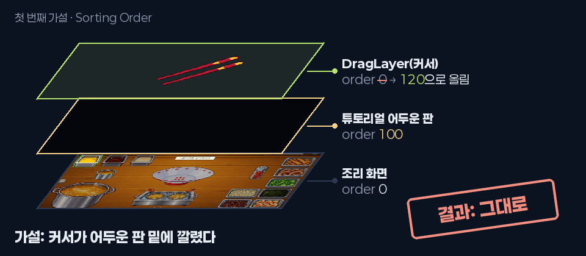<span class="src">그림</span></figure></div>
              <p><span class="k">WHY</span><span>튜토리얼은 안내 중인 재료통만 밝게 남기고 화면을 어두운 판(그리기 순서 100)으로 덮는다. 그런데 커서가 든 <span class="mono">DragLayer</span>에는 Canvas가 없어서 순서가 0이었다. 같은 때 확인창이 실제로 이 판 밑에 깔리는 버그도 있어서 그럴듯했다.</span></p>
              <p><span class="k">DID</span><span><span class="mono">DragLayer</span>에 Canvas를 붙이고 순서를 120으로 올렸다.</span></p>
              <p><span class="k">RESULT</span><span>확인창은 고쳐졌는데 커서는 그대로 사라졌다.</span></p>
            </li>
            <li class="fail">
              <div class="try-h"><span class="try-n">2</span><b>고친 게 화면에 아직 반영이 안 됐다고 봤다</b><span class="tag-x">그대로</span></div>
              <p><span class="k">WHY</span><span>UI는 빌더를 다시 돌려야 씬에 들어가는데, 그때 Play 중이라 빌더를 못 돌린 상태였다.</span></p>
              <p><span class="k">DID</span><span>같은 가설을 유지하고 빌더 재실행을 기다렸다.</span></p>
              <p><span class="k">RESULT</span><span>반영한 뒤에도 그대로. "튜토리얼에서 재료통 올리면 마우스커서 사라진다고 지금 3번째 얘기한다"가 이때다. 같은 날 "두 번째 손님부터는 조작이 안 된다"는 보고도 같이 들어왔다.</span></p>
            </li>
            <li class="ok">
              <div class="try-h"><span class="try-n">3</span><b>짐작을 멈추고 콘솔과 카메라 값을 읽었다</b><span class="tag-o">원인 두 개</span></div>
              <div class="try-media"><figure class="media-card">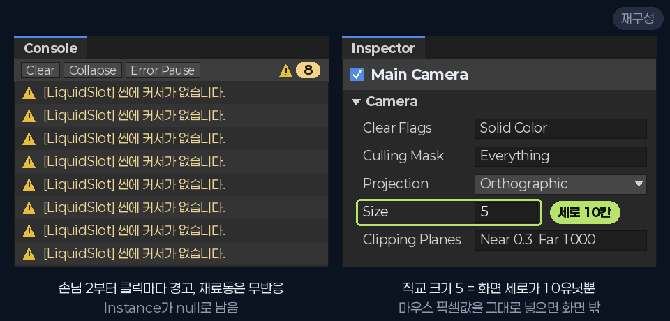<span class="src">그림 · 당시 값</span></figure></div>
              <p><span class="k">WHY</span><span>같은 가설로 두 번 실패했고, 증상이 하나 더(둘째 손님부터 조작 불가) 늘었다. 화면만 보고 추측하는 걸 그만두고 엔진이 남긴 기록부터 봐야 했다.</span></p>
              <p><span class="k">DID</span><span>콘솔에 같은 경고 <span class="mono">[LiquidSlot] 씬에 커서가 없습니다.</span>가 8번 찍혀 있었다. 재료통이 커서를 찾다가 <span class="mono">CookingCursor.Instance == null</span>을 만난 거다. 이어서 카메라를 보니 직교 카메라 <span class="mono">Size 5</span>, 화면 세로가 10칸뿐이었다. 전날 화면 필터를 UI에도 걸려고 Canvas 모드를 바꾼 게 떠올랐다.</span></p>
              <p><span class="k">RESULT</span><span>"사라짐"은 화면 밖으로 날아간 거였고, "조작 불가"는 등록이 지워진 거였다. 서로 다른 두 원인이 "커서가 안 보인다"는 같은 증상으로 보였다.</span></p>
            </li>
          </ol>
        </div>

        <div class="panel" role="tabpanel" data-label="원인 그림">
          <h4>03 원인 그림</h4>
          <div class="figs">
            <figure class="fig">
              <svg viewBox="0 0 520 240" role="img" aria-label="Overlay에서는 화면 안에 있던 커서가 Camera 모드에서는 화면 밖 멀리 나간다">
                <defs><marker id="ar2" viewBox="0 0 10 10" refX="9" refY="5" markerWidth="7" markerHeight="7" orient="auto"><path d="M0 0L10 5L0 10z" class="f-bad"/></marker></defs>
                <text x="10" y="22" class="t-mute">Overlay · 세로 540칸</text>
                <rect x="10" y="34" width="220" height="124" rx="4" class="f-panel s-line2"/>
                <circle cx="120" cy="96" r="7" class="f-lime"/>
                <text x="120" y="124" class="t-lime" text-anchor="middle">커서 (480, 300)</text>
                <text x="10" y="186" class="t-sm">마우스 좌표 = 월드 좌표</text>
                <text x="290" y="22" class="t-mute">Camera · 세로 10칸</text>
                <rect x="290" y="160" width="220" height="64" rx="4" class="f-panel s-line2"/>
                <text x="400" y="198" class="t-sm" text-anchor="middle">실제 화면 (10칸)</text>
                <line x1="400" y1="160" x2="400" y2="40" class="s-bad" stroke-dasharray="4 4" marker-end="url(#ar2)"/>
                <circle cx="400" cy="34" r="7" class="f-bad"/>
                <text x="414" y="70" class="t-bad">y = 300칸</text>
                <text x="414" y="92" class="t-bad">화면 30개 위</text>
              </svg>
              <figcaption><b>① Canvas 모드를 바꾸면 "1칸"의 크기가 바뀐다</b>Overlay에서는 월드 1칸이 화면 1픽셀이라 마우스 좌표를 그대로 넣어도 맞았다. Screen Space - Camera에서는 1칸이 카메라 기준이다.</figcaption>
            </figure>
            <figure class="fig">
              <svg viewBox="0 0 520 240" role="img" aria-label="손님1, 시식 연출, 손님2로 이어지는 동안 Instance가 null로 남는 타임라인">
                <line x1="60" y1="60" x2="510" y2="60" class="s-line2"/>
                <circle cx="100" cy="60" r="6" class="f-lime"/><text x="100" y="40" class="t-sm" text-anchor="middle">손님 1</text>
                <rect x="160" y="42" width="220" height="36" rx="6" class="f-panel s-warn"/><text x="270" y="66" class="t-warn" text-anchor="middle">시식 연출 (끔 → 켬)</text>
                <circle cx="450" cy="60" r="6" class="f-bad"/><text x="450" y="40" class="t-sm" text-anchor="middle">손님 2</text>
                <text x="6" y="122" class="t-mute">이전</text>
                <text x="100" y="114" class="t-sm" text-anchor="middle">Awake</text><text x="100" y="134" class="t-lime" text-anchor="middle">등록</text>
                <text x="215" y="114" class="t-sm" text-anchor="middle">OnDisable</text><text x="215" y="134" class="t-warn" text-anchor="middle">해제</text>
                <text x="330" y="114" class="t-sm" text-anchor="middle">다시 켜짐</text><text x="330" y="134" class="t-bad" text-anchor="middle">Awake 안 불림</text>
                <text x="450" y="122" class="t-bad" text-anchor="middle">null</text>
                <line x1="6" y1="156" x2="510" y2="156" class="s-line2" stroke-dasharray="2 4"/>
                <text x="6" y="196" class="t-mute">이후</text>
                <text x="100" y="188" class="t-sm" text-anchor="middle">OnEnable</text><text x="100" y="208" class="t-lime" text-anchor="middle">등록</text>
                <text x="215" y="188" class="t-sm" text-anchor="middle">OnDisable</text><text x="215" y="208" class="t-warn" text-anchor="middle">해제</text>
                <text x="330" y="188" class="t-sm" text-anchor="middle">OnEnable</text><text x="330" y="208" class="t-lime" text-anchor="middle">다시 등록</text>
                <text x="450" y="196" class="t-lime" text-anchor="middle">정상</text>
              </svg>
              <figcaption><b>② 등록은 한 번, 해제는 매번</b>시식 연출은 화면을 비우려고 커서가 든 DragLayer를 통째로 껐다 켠다. 끌 때마다 OnDisable이 등록을 지우는데, 다시 등록하는 Awake는 평생 한 번만 불린다.</figcaption>
            </figure>
          </div>
          <div class="tbl center" style="margin-top:18px"><table style="min-width:0">
            <thead><tr><th></th><th>처음 켜짐</th><th>꺼짐</th><th>다시 켜짐</th><th>파괴</th></tr></thead>
            <tbody>
              <tr><td class="mono mute">Awake</td><td class="ok">●</td><td class="mute">–</td><td class="no">✕</td><td class="mute">–</td></tr>
              <tr><td class="mono mute">OnEnable</td><td class="ok">●</td><td class="mute">–</td><td class="ok">●</td><td class="mute">–</td></tr>
              <tr><td class="mono mute">OnDisable</td><td class="mute">–</td><td class="tri">●</td><td class="mute">–</td><td class="tri">●</td></tr>
              <tr><td class="mono mute">OnDestroy</td><td class="mute">–</td><td class="mute">–</td><td class="mute">–</td><td class="tri">●</td></tr>
            </tbody>
          </table></div>
        </div>

        <div class="panel" role="tabpanel" data-label="코드 변경">
          <h4>04 코드 변경</h4>
          <div class="stack-col" style="gap:26px">
            <div>
              <div class="code2"><div class="hd"><span class="file">CookingCursor.cs</span><span class="fn">Update()</span><span class="cause2">원인 ① 픽셀 좌표를 그대로 넣음</span><span class="what">조리 화면의 그림 커서(젓가락·국자)를 마우스 위치에 그리는 파일. Update()는 매 프레임 커서 위치를 옮긴다.</span></div>
<ol>
<li>Vector2 screen = Mouse.current.position.ReadValue();</li>
<li>Vector2 offset = HotspotOffset() + <span class="kw">new</span> Vector2(0f, -dip);</li>
<li class="del">rect.position = screen + offset * scale;</li>
<li class="add">rect.position = CanvasPoint.ToWorld(rect.parent <span class="kw">as</span> RectTransform, screen + offset * scale);</li>
</ol></div>
              <ul class="notes">
                <li><span class="ln">1</span><span><span class="mono">screen</span>은 마우스 위치. 화면 왼쪽 아래가 (0, 0)인 픽셀 단위다.</span></li>
                <li><span class="ln">2</span><span><span class="mono">offset</span>은 젓가락 끝이 마우스 끝에 오도록 그림을 살짝 옮기는 값이다.</span></li>
                <li><span class="ln del">3 지움</span><span>픽셀 좌표를 월드 좌표(<span class="mono">position</span>)에 그대로 넣었다. Overlay에서는 우연히 맞았지만 Camera 모드에서는 세로 10칸짜리 화면의 수십 배 밖으로 나간다.</span></li>
                <li><span class="ln add">4 추가</span><span>새로 만든 변환 함수를 거쳐 월드 좌표로 바꾼 다음 넣는다.</span></li>
              </ul>
            </div>
            <div>
              <div class="code2"><div class="hd"><span class="file">CanvasPoint.cs</span><span class="fn">새 파일</span><span class="cause2">원인 ① 같은 계산이 네 곳에</span><span class="what">화면 좌표를 UI 월드 좌표로 바꾸는 함수를 한 곳에 모은 파일. 커서, 드래그할 때 따라오는 재료 그림, 클릭 효과, Tab 주문서 판정 네 곳이 같이 쓴다.</span></div>
<ol>
<li class="add"><span class="kw">public static</span> Vector3 ToWorld(RectTransform area, Vector2 screen)</li>
<li class="add">{</li>
<li class="add">    Vector3 world;</li>
<li class="add">    <span class="kw">return</span> RectTransformUtility.ScreenPointToWorldPointInRectangle(area, screen, CameraFor(area), <span class="kw">out</span> world)</li>
<li class="add">        ? world : (Vector3)screen;</li>
<li class="add">}</li>
<li class="add"><span class="kw">public static</span> Camera CameraFor(RectTransform area)</li>
<li class="add">{</li>
<li class="add">    Canvas canvas = area.GetComponentInParent&lt;Canvas&gt;().rootCanvas;</li>
<li class="add">    <span class="kw">return</span> canvas.renderMode == RenderMode.ScreenSpaceOverlay ? <span class="kw">null</span> : canvas.worldCamera;</li>
<li class="add">}</li>
</ol></div>
              <ul class="notes">
                <li><span class="ln add">1–6</span><span>유니티 내장 함수로 화면의 점을 UI 평면 위의 월드 점으로 바꾼다. 어느 카메라로 보고 있는지를 같이 넘기는 게 핵심이다.</span></li>
                <li><span class="ln add">7–11</span><span>Overlay면 카메라 없이(<span class="mono">null</span>), Camera 모드면 그 Canvas가 쓰는 카메라를 돌려준다. 렌더 모드를 다시 바꿔도 여기 한 곳이 알아서 맞춘다.</span></li>
              </ul>
            </div>
            <div>
              <div class="code2"><div class="hd"><span class="file">CookingCursor.cs</span><span class="fn">Awake() · OnEnable() · OnDisable()</span><span class="cause2">원인 ② 등록과 해제의 짝이 어긋남</span><span class="what">같은 파일. Instance는 재료통들이 "지금 커서가 누구냐"를 찾을 때 쓰는 전역 참조(싱글턴)다.</span></div>
<ol>
<li><span class="kw">private void</span> Awake()</li>
<li>{</li>
<li class="del">    Instance = <span class="kw">this</span>;</li>
<li>    rect = GetComponent&lt;RectTransform&gt;();</li>
<li>}</li>
<li><span class="kw">private void</span> OnEnable()</li>
<li>{</li>
<li class="add">    Instance = <span class="kw">this</span>;</li>
<li>    arrowMode = AnyUiOpen() || !ToolVisible();</li>
<li>}</li>
<li><span class="kw">private void</span> OnDisable()</li>
<li>{</li>
<li>    <span class="kw">if</span> (Instance == <span class="kw">this</span>) Instance = <span class="kw">null</span>;</li>
<li>}</li>
</ol></div>
              <ul class="notes">
                <li><span class="ln del">3 지움</span><span>오브젝트가 처음 생길 때 딱 한 번만 등록했다.</span></li>
                <li><span class="ln add">8 추가</span><span>켜질 때마다 다시 등록한다. 시식 연출이 끄고 켜도 돌아온다.</span></li>
                <li><span class="ln">13</span><span>그대로. 꺼질 때는 등록을 지운다. 등록(OnEnable)과 해제(OnDisable)가 이제 짝이 맞는다.</span></li>
              </ul>
            </div>
          </div>
        </div>

        <div class="panel" role="tabpanel" data-label="고치기 전과 후">
          <h4>05 고치기 전과 후</h4>
          <div class="ba-block">
            <div class="ba-pair">
              <figure class="media-card"><span class="src">재구성 · <span class="tag-b">이전</span></span></figure>
              <figure class="media-card">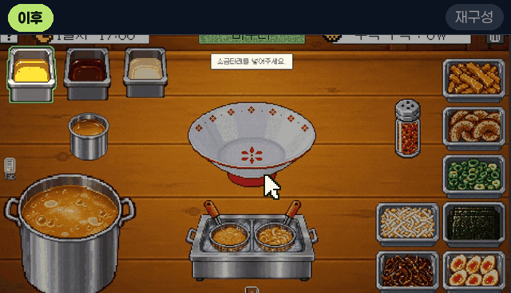<span class="src">재구성 · <span class="tag-a">이후</span></span></figure>
            </div>
            <h5>① 커서가 마우스를 따라오나</h5>
            <p>실제 조리 화면 위에 게임에 쓴 커서 그림을 올려 다시 만든 움짤이다. 이전에는 재료통에 들어가는 순간 커서가 화면 위 멀리 나가 아무것도 안 보인다. 이후에는 젓가락 커서가 마우스를 따라와서 끌어 옮기는 것까지 보인다.</p>
          </div>
          <div class="ba-block">
            <div class="ba-pair">
              <figure class="media-card">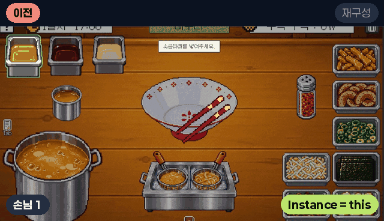<span class="src">재구성 · <span class="tag-b">이전</span></span></figure>
              <figure class="media-card"><span class="src">재구성 · <span class="tag-a">이후</span></span></figure>
            </div>
            <h5>② 연출을 지나도 조작이 되나</h5>
            <p>손님 1 → 시식 연출 → 손님 2 순서다. 이전에는 연출이 DragLayer를 껐다 켠 뒤 Instance가 null로 남아서, 둘째 손님에서는 눌러도 아무 일이 없고 콘솔 경고만 쌓인다. 이후에는 OnEnable이 다시 등록해서 그대로 집힌다.</p>
          </div>
          <div class="two" style="margin-top:18px">
            <ul class="checks">
              <li><span class="ok">✓</span><span>네 곳의 좌표 계산이 CanvasPoint 하나를 거친다</span></li>
              <li><span class="ok">✓</span><span>렌더 모드를 Overlay로 되돌려도, Camera로 둬도 네 곳이 같이 맞는다</span></li>
              <li><span class="ok">✓</span><span>시식 연출 뒤 둘째 손님부터도 재료가 집힌다</span></li>
              <li><span class="ok">✓</span><span>"커서가 없습니다" 경고 0건</span></li>
              <li><span class="ok">✓</span><span>제출 빌드로 5일차까지 플레이해서 확인</span></li>
            </ul>
            <figure class="media-card"><span class="src real">실제 화면 · 고친 뒤</span></figure>
          </div>
        </div>

        <div class="panel" role="tabpanel" data-label="배운 것">
          <h4>06 배운 것</h4>
          <div class="lessons">
            <div class="lesson has-media">
              <div class="lm"></div>
              <b>화면 좌표와 월드 좌표는 다른 단위다</b><span>마우스 위치(<span class="mono">Mouse.current.position</span>)는 화면 픽셀이고, <span class="mono">RectTransform.position</span>은 월드 좌표다. Overlay에서만 둘이 우연히 같다. 그래서 둘 사이는 항상 <span class="mono">RectTransformUtility</span>처럼 카메라를 받는 함수로 바꿔야 렌더 모드가 바뀌어도 안 깨진다.</span>
            </div>
            <div class="lesson"><b>같은 계산이 여러 곳에 있으면 하나로 모은다</b><span>렌더 모드 하나 바꾼 걸로 네 곳이 한꺼번에 깨졌다. 한 함수에 있었으면 한 곳만 고치면 됐다. 이제 같은 공식을 두 번째로 쓰려는 순간 함수로 뺀다.</span></div>
            <div class="lesson has-media">
              <div class="anim lm">
                <div class="lc">
                  <span></span><span class="h">DragLayer</span><span class="h" style="grid-column:span 3">Instance</span>
                  <span class="alabel b">이전</span><span class="v"><span class="on k1">켜짐</span><span class="off k2">꺼짐</span><span class="on k3">다시 켜짐</span></span><span class="v" style="grid-column:span 3"><span class="on k1">this · 정상</span><span class="off k2">null · 해제됨</span><span class="off k3">null · 그대로 (Awake 안 불림)</span></span>
                  <span class="alabel g">이후</span><span class="v"><span class="on k1">켜짐</span><span class="off k2">꺼짐</span><span class="on k3">다시 켜짐</span></span><span class="v" style="grid-column:span 3"><span class="on k1">this · 정상</span><span class="off k2">null · 해제됨</span><span class="on k3">this · OnEnable이 다시 등록</span></span>
                </div>
              </div>
              <b>등록과 해제는 같은 짝 안에 둔다</b><span><span class="mono">Awake ⟷ OnDestroy</span>, <span class="mono">OnEnable ⟷ OnDisable</span>. 짝이 어긋나면 위처럼 껐다 켜는 순간 등록이 사라진다. 껐다 켜질 수 있는 오브젝트의 싱글턴 등록과 이벤트 구독은 OnEnable/OnDisable에 둔다.</span>
            </div>
            <div class="lesson"><b>부모가 꺼지면 자식도 OnDisable이 불린다</b><span>커서 스크립트는 직접 꺼진 적이 없다. 부모 DragLayer가 꺼졌을 뿐이다. 오브젝트를 끄는 코드를 짤 때는 그 밑에 뭐가 달려 있는지도 같이 본다.</span></div>
            <div class="lesson has-media">
              <div class="lm"></div>
              <b>그럴듯한 가설일수록 증거부터 확인한다</b><span>"판 밑에 깔렸다"는 같은 날 실제로 있던 버그라 더 믿었다. 콘솔 경고 한 줄을 먼저 봤으면 두 번의 시도가 필요 없었다. 이제 화면 버그를 보면 콘솔과 인스펙터 값부터 확인한다.</span>
            </div>
          </div>
        </div>
      </div>
    </article>

    <!-- C -->
    <article class="prob" id="prob-c">
      <div class="prob-sum">
        <div class="txt">
          <span class="tag">C · 입력</span>
          <h3>한 번 누른 입력이 두 번 처리됐다</h3>
          <div class="chips"><span class="chip">Input System</span><span class="chip">wasPressedThisFrame</span><span class="chip">코루틴과 프레임</span><span class="chip">이벤트 vs 폴링</span></div>
          <dl class="star4">
            <dt>상황</dt><dd>오프닝 내레이션이 둘째 줄부터 타자기 효과 없이 통째로 찍혔다. 제출 뒤 다시 플레이하다가, 손님 소감 뒤에 뜨는 ▶를 누르면 결과창 없이 조리 화면으로 넘어가는 것도 찾았다.</dd>
            <dt>시도</dt><dd>타자기는 두 번(들어갈 때만 막았다가 나갈 때까지). ▶는 한 번 원인에서 뺐다가 다시 찾았다.</dd>
            <dt>원인</dt><dd>wasPressedThisFrame은 누른 프레임 동안 내내 true다. 같은 프레임에 그 값을 읽는 곳이 둘이면 클릭 한 번이 두 번 처리된다.</dd>
            <dt>결과</dt><dd class="res">내레이션이 모든 줄에서 한 글자씩 찍힌다. ▶는 원인과 수정안까지 정리했다.</dd>
          </dl>
          <button class="btn more" type="button" aria-expanded="false" aria-controls="det-c">자세히 보기 ▾</button>
        </div>
        <figure><figcaption class="cap">실제 화면. 한 줄씩 찍혀야 할 내레이션이 한꺼번에 나와 있다</figcaption></figure>
      </div>
      <div class="detail" id="det-c" hidden>
        <div class="tabs" role="tablist" aria-label="C 자세히"></div>

        <div class="panel" role="tabpanel" data-label="증상">
          <h4>01 증상</h4>
          <div class="sym-grid">
            <figure class="media-card"><span class="src real">실제 화면</span><figcaption><b><span class="num">①</span>넘긴 줄이 타자기 없이 통째로 찍힌다</b>오프닝 내레이션. 첫 줄만 한 글자씩 나오고, 클릭해서 넘긴 둘째 줄부터는 한 번에 다 나온다.</figcaption></figure>
            <figure class="media-card">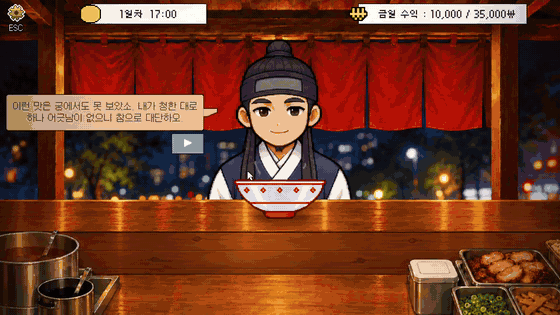<span class="src real">실제 화면 · 제출 빌드 녹화</span><figcaption><b><span class="num">②</span>▶를 누르면 결과창이 안 뜬다</b>손님 소감 뒤 ▶를 누르면 결과창 없이 조리 화면으로 넘어간다. 빈 곳을 누르거나 Space를 누르면 정상이다.</figcaption></figure>
          </div>
          <p class="mute" style="font-size:15.5px;margin-top:14px">둘 다 "한 번 눌렀는데 한 단계가 더 지나간다"는 모양이다.</p>
        </div>

        <div class="panel" role="tabpanel" data-label="시도 과정">
          <h4>02 시도 과정</h4>
          <ol class="tries">
            <li class="fail">
              <div class="try-h"><span class="try-n">1</span><b>타자기: 들어갈 때만 한 프레임을 쉬었다</b><span class="tag-x">반쪽</span></div>
              <div class="try-media"><figure class="media-card"><span class="src real">실제 화면 · 1차 수정 뒤</span></figure></div>
              <p><span class="k">WHY</span><span>모드를 고른 클릭이 첫 줄을 건너뛰는 문제를 먼저 봤다. 그래서 기다리기 시작하기 전에 한 프레임을 쉬게 했다.</span></p>
              <p><span class="k">DID</span><span>대기 루프 앞에 <span class="mono">yield return null</span>을 넣었다.</span></p>
              <p><span class="k">RESULT</span><span>첫 줄은 정상이 됐는데 둘째 줄부터는 여전히 통째로 찍혔다. 기다림이 끝나는 쪽은 그대로였기 때문이다.</span></p>
            </li>
            <li class="ok">
              <div class="try-h"><span class="try-n">2</span><b>타자기: 기다림이 끝날 때도 한 프레임을 쉬었다</b><span class="tag-o">해결 ①</span></div>
              <div class="try-media"><figure class="media-card">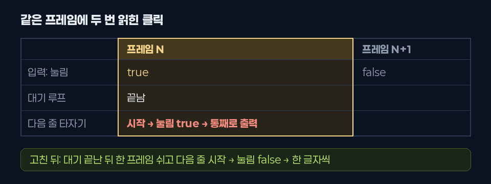<span class="src">그림</span></figure></div>
              <p><span class="k">WHY</span><span>들어갈 때를 막았는데도 그대로라면, 클릭이 어디서 두 번 읽히는지 프레임 단위로 따라가 봐야 했다.</span></p>
              <p><span class="k">DID</span><span>줄을 넘기는 순서를 프레임 단위로 따라갔다. 넘기려고 누른 클릭으로 기다림이 끝나고, 같은 프레임에 다음 줄 타자기가 시작되면서 첫 검사 <span class="mono">if (Pressed()) break;</span>에서 같은 클릭을 또 읽었다.</span></p>
              <p><span class="k">RESULT</span><span>기다림이 끝난 뒤에도 <span class="mono">yield return null</span>로 한 프레임을 쉬게 해서 해결.</span></p>
            </li>
            <li class="fail">
              <div class="try-h"><span class="try-n">3</span><b>▶: "손님이 바로 사라진다" 때 ▶를 의심했다가 뺐다</b><span class="tag-x">그땐 아님</span></div>
              <div class="try-media"><figure class="media-card"><span class="src real">실제 화면 · 9/11 시식 연출</span></figure></div>
              <p><span class="k">WHY</span><span>9/11에 시식 연출 중 클릭하면 손님이 소감 없이 사라지는 버그가 있었다. 말풍선 버튼이 클릭을 받는 줄 알았다.</span></p>
              <p><span class="k">DID</span><span>시식 연출이 시작될 때 버튼 상태를 확인했다.</span></p>
              <p><span class="k">RESULT</span><span>그때는 연출이 버튼을 꺼 두고 있어서 원인이 아니었다. 진짜 원인은 건너뛰기가 연출 전체를 끝내 버리는 거였다.</span></p>
            </li>
            <li class="ok">
              <div class="try-h"><span class="try-n">4</span><b>▶: 제출 빌드 로그를 따라가 다시 찾았다</b><span class="tag-o">원인 ②</span></div>
              <div class="try-media"><figure class="media-card">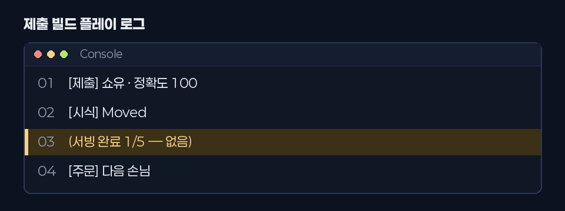<span class="src">그림 · 당시 로그</span></figure></div>
              <p><span class="k">WHY</span><span>제출 빌드를 다시 하다가 결과창이 안 뜨는 걸 봤다. 화면만으로는 어디서 끊겼는지 몰라서 플레이 로그를 봤다.</span></p>
              <p><span class="k">DID</span><span>로그에서 "[시식] Moved" 다음에 와야 할 "서빙 완료"가 빠진 걸 찾고, 그 사이에 실행되는 코드를 따라갔다.</span></p>
              <p><span class="k">RESULT</span><span>9/15에 "뭘 눌러야 하는지 보이게" 소감 뒤에 ▶ 버튼을 다시 띄우도록 바꿨는데, 그 버튼의 onClick은 원래 용도인 "주문 화면 닫기"에 그대로 연결돼 있었다. 3번 시도 때는 없던 경로가 새로 생긴 거다.</span></p>
            </li>
          </ol>
        </div>

        <div class="panel" role="tabpanel" data-label="원인 그림">
          <h4>03 원인 그림</h4>
          <div class="figs">
            <figure class="fig">
              <svg viewBox="0 0 520 220" role="img" aria-label="프레임 N에서 클릭이 대기 종료와 다음 줄 건너뛰기 둘 다에 쓰이는 타임라인">
                <rect x="104" y="8" width="204" height="204" rx="6" class="f-hi"/>
                <text x="206" y="30" class="t-warn" text-anchor="middle">프레임 N · 클릭</text>
                <text x="414" y="30" class="t-mute" text-anchor="middle">프레임 N+1</text>
                <text x="6" y="66" class="t-mute">입력</text>
                <text x="206" y="66" class="t-sm" text-anchor="middle">눌림 = true</text>
                <text x="414" y="66" class="t-mute" text-anchor="middle">눌림 = false</text>
                <text x="6" y="112" class="t-mute">이전</text>
                <text x="206" y="104" class="t-sm" text-anchor="middle">대기 끝 → 다음 줄 시작</text>
                <text x="206" y="126" class="t-bad" text-anchor="middle">눌림 true → 통째로</text>
                <text x="6" y="176" class="t-mute">이후</text>
                <text x="206" y="176" class="t-sm" text-anchor="middle">대기 끝 → 한 프레임 쉼</text>
                <text x="414" y="166" class="t-sm" text-anchor="middle">다음 줄 시작</text>
                <text x="414" y="188" class="t-lime" text-anchor="middle">눌림 false → 한 글자씩</text>
              </svg>
              <figcaption><b>① 같은 프레임 안에서 두 번 읽힌 클릭</b>wasPressedThisFrame은 누른 그 프레임 동안 계속 true다. 기다림이 끝나고 다음 기다림이 같은 프레임에 시작되면 같은 클릭을 또 본다.</figcaption>
            </figure>
            <figure class="fig">
              <svg viewBox="0 0 520 220" role="img" aria-label="한 번의 클릭이 버튼 onClick과 대기 코루틴 두 경로로 갈라지는 그림">
                <circle cx="56" cy="110" r="34" class="f-panel s-warn"/>
                <text x="56" y="106" class="t-warn" text-anchor="middle">▶ 클릭</text>
                <text x="56" y="126" class="t-mute" text-anchor="middle">1번</text>
                <line x1="90" y1="96" x2="160" y2="56" class="s-mute"/>
                <line x1="90" y1="124" x2="160" y2="164" class="s-mute"/>
                <rect x="160" y="30" width="196" height="52" rx="8" class="f-panel s-line2"/>
                <text x="258" y="52" class="t-sm" text-anchor="middle">버튼 이벤트 onClick</text>
                <text x="258" y="72" class="t-mute" text-anchor="middle">주문 화면 닫기</text>
                <rect x="372" y="30" width="142" height="52" rx="8" class="f-panel s-bad"/>
                <text x="443" y="61" class="t-bad" text-anchor="middle">조리 화면으로</text>
                <rect x="160" y="138" width="196" height="52" rx="8" class="f-panel s-line2"/>
                <text x="258" y="160" class="t-sm" text-anchor="middle">매 프레임 검사</text>
                <text x="258" y="180" class="t-mute" text-anchor="middle">다음 단계로</text>
                <rect x="372" y="138" width="142" height="52" rx="8" class="f-panel s-lime"/>
                <text x="443" y="169" class="t-lime" text-anchor="middle">따봉 → 결과창</text>
                <text x="258" y="116" class="t-bad" text-anchor="middle">두 흐름이 엇갈린다</text>
              </svg>
              <figcaption><b>② 이벤트와 폴링이 같은 클릭을 나눠 받음</b>버튼 이벤트와 매 프레임 입력 검사가 같은 클릭에 각자 반응했다.</figcaption>
            </figure>
          </div>
        </div>

        <div class="panel" role="tabpanel" data-label="코드 변경">
          <h4>04 코드 변경</h4>
          <div class="stack-col" style="gap:26px">
            <div>
              <div class="code2"><div class="hd"><span class="file">OpeningNarration.cs</span><span class="fn">WaitForPress()</span><span class="cause2">원인 ① 기다림이 끝난 프레임에 클릭을 또 읽음</span><span class="what">게임 시작 전 검은 화면에 내레이션을 한 줄씩 타자기처럼 찍는 파일. WaitForPress()는 한 줄을 다 찍은 뒤 누를 때까지 기다리는 코루틴이다.</span></div>
<ol>
<li><span class="kw">yield return null</span>;</li>
<li><span class="kw">while</span> (!Pressed())</li>
<li>{</li>
<li>    t += Time.unscaledDeltaTime;</li>
<li>    <span class="kw">yield return null</span>;</li>
<li>}</li>
<li><span class="kw">if</span> (prompt != <span class="kw">null</span>) prompt.enabled = <span class="kw">false</span>;</li>
<li class="add"><span class="kw">yield return null</span>;</li>
</ol></div>
              <ul class="notes">
                <li><span class="ln">1</span><span>들어갈 때 한 프레임 쉬기(1차 수정). 앞 단계에서 누른 클릭을 여기서 다시 읽지 않게 한다.</span></li>
                <li><span class="ln">2–6</span><span>누를 때까지 매 프레임 확인하며 기다린다. <span class="mono">Pressed()</span>는 wasPressedThisFrame을 본다.</span></li>
                <li><span class="ln add">8 추가</span><span>기다림이 끝날 때도 한 프레임 쉰다. 이 줄이 없으면 같은 프레임에 다음 줄 타자기가 시작돼서, 방금 누른 클릭을 "건너뛰기"로 또 읽는다.</span></li>
              </ul>
            </div>
            <div>
              <div class="code2"><div class="hd"><span class="file">OrderScreenUI.cs</span><span class="fn">Advance()</span><span class="cause2">원인 ② 클릭 하나를 두 곳이 처리</span><span class="cause2" style="color:var(--mute);border-color:var(--line-2)">수정안 · 제출 빌드에는 없음</span><span class="what">손님 말풍선과 그 아래 버튼을 다루는 파일. Advance()는 버튼을 누를 때마다 불려서 다음 대사로 넘기거나, 마지막이면 주문 화면을 닫는다.</span></div>
<ol>
<li><span class="kw">private void</span> Advance()</li>
<li>{</li>
<li class="add">    <span class="kw">if</span> (cutscene != <span class="kw">null</span> &amp;&amp; cutscene.WaitingForNext) <span class="kw">return</span>;</li>
<li>    <span class="kw">if</span> (IsTyping)</li>
<li>    {</li>
<li>        FinishTyping();</li>
<li>        <span class="kw">return</span>;</li>
<li>    }</li>
<li>    ...</li>
<li>    Close();</li>
<li>}</li>
</ol></div>
              <ul class="notes">
                <li><span class="ln add">3 추가</span><span>시식 연출이 "다음" 입력을 기다리는 중이면 버튼은 아무것도 안 한다. 그 클릭은 연출 쪽 한 곳에서만 처리된다.</span></li>
                <li><span class="ln">4–8</span><span>대사를 찍는 중이면 그 줄을 마저 찍는다.</span></li>
                <li><span class="ln">10</span><span>마지막 대사면 주문 화면을 닫고 조리 화면으로 간다. 시식 연출의 ▶도 이 버튼이라, 소감 뒤에 누르면 여기까지 와 버렸다.</span></li>
              </ul>
            </div>
          </div>
        </div>

        <div class="panel" role="tabpanel" data-label="고치기 전과 후">
          <h4>05 고치기 전과 후</h4>
          <div class="ba-block">
            <div class="ba-pair">
              <figure class="media-card">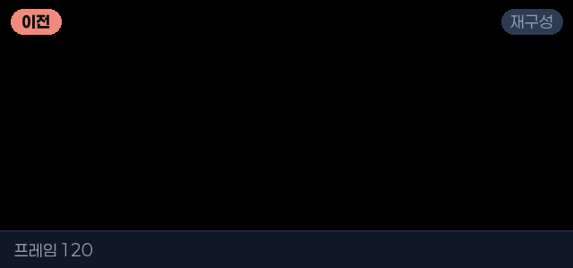<span class="src">재구성 · <span class="tag-b">이전</span></span></figure>
              <figure class="media-card"><span class="src">재구성 · <span class="tag-a">이후</span></span></figure>
            </div>
            <h5>① 줄을 넘길 때 타자기가 도나</h5>
            <p>노란 "클릭"이 줄을 넘기는 순간이다. 이전에는 넘긴 줄이 한 번에 나오고, 이후에는 첫 줄처럼 한 글자씩 찍힌다.</p>
          </div>
          <div class="ba-block">
            <div class="ba-pair">
              <figure class="media-card"><span class="src real">실제 화면 · <span class="tag-b">이전</span></span></figure>
              <figure class="media-card"><span class="src">재구성 · 수정안 · <span class="tag-a">이후</span></span></figure>
            </div>
            <h5>② ▶를 누르면 결과창이 뜨나</h5>
            <p>왼쪽은 제출 빌드를 그대로 녹화한 것, 오른쪽은 수정안을 넣었을 때의 흐름을 실제 화면으로 이어 붙인 거다. 제출이 끝난 빌드라 수정안은 게임에 넣지 않았다.</p>
          </div>
          <ul class="checks" style="margin-top:18px">
            <li><span class="ok">✓</span><span>① 모든 줄이 한 글자씩 찍히고, 누르면 그 줄만 마저 찍힌다</span></li>
            <li><span class="ok">✓</span><span>① 모드를 고른 클릭이 첫 줄을 건너뛰던 것도 같이 사라졌다</span></li>
            <li><span class="tri">△</span><span>② 재현 영상과 로그로 원인까지 확인했고, 수정안은 정리만 했다</span></li>
          </ul>
        </div>

        <div class="panel" role="tabpanel" data-label="배운 것">
          <h4>06 배운 것</h4>
          <div class="lessons">
            <div class="lesson has-media">
              <div class="lm"></div>
              <b>wasPressedThisFrame은 "그 프레임 동안" true다</b><span>"한 번 누르면 한 번만 true"가 아니다. 누른 프레임 안에서는 몇 번을 물어봐도 true다. 같은 프레임에 그 값을 읽는 코드가 둘이면 둘 다 반응한다.</span>
            </div>
            <div class="lesson"><b>코루틴 두 개가 같은 프레임에 이어질 수 있다</b><span>기다림 하나가 끝나고 다음 기다림이 시작되는 사이에 프레임이 바뀐다는 보장이 없다. <span class="mono">yield return null</span> 없이 넘어가면 둘은 같은 프레임이다. 입력을 받고 다음 단계로 넘어갈 때는 한 프레임 쉬는 걸 기본으로 둔다. 들어갈 때와 나갈 때 둘 다.</span></div>
            <div class="lesson has-media">
              <div class="anim lm"><div class="path"><div class="src">▶ 클릭</div><div class="dst d1 off">버튼 이벤트 → 주문 화면 닫기 (무시)</div><div class="dst d2 on">시식 연출 → 따봉 → 결과창</div><span class="dot"></span></div></div>
              <b>한 입력은 한 곳에서만 처리한다</b><span>버튼 이벤트(onClick)와 매 프레임 입력 검사(폴링)를 같은 동작에 섞으면 한 클릭이 두 길로 갈라진다. 둘 중 하나로 정하거나, 위처럼 한쪽이 처리하는 동안 다른 쪽은 무시하게 만든다.</span>
            </div>
            <div class="lesson"><b>기능을 붙이면 같은 입력을 읽는 곳을 찾아본다</b><span>▶ 버튼은 편의 기능으로 붙였는데, 예전에 "원인이 아니다"라고 뺐던 길을 다시 열었다. 버튼 하나를 다시 쓸 때도 그 버튼에 이미 뭐가 연결돼 있는지부터 본다.</span></div>
          </div>
        </div>
      </div>
    </article>
  </div>
</section>

<!-- 협업 · 회고 -->
<section class="page" id="collab">
  <div class="wrap">
    <div class="sec-head">
      <span class="eyebrow">COLLABORATION · RETROSPECTIVE</span>
      <h2 class="h-sec">둘이 한 프로젝트에 코드를 쓸 때</h2>
    </div>
    <div class="collab">
      <div class="sys">
        <h3>git이 알려 주지 않는 충돌을 먼저 막았다</h3>
        <p>프로젝트에 asmdef도 네임스페이스도 없어서 모든 스크립트가 어셈블리 하나로 묶여 있었다. 둘이 각자 다른 폴더에 같은 이름의 enum을 만들면, git은 경로가 달라서 깨끗하게 머지되고 Unity를 켜는 순간 프로젝트 전체가 컴파일에 실패한다.</p>
        <p>그래서 공용 타입은 한 사람이 먼저 만들어 올리고, 폴더별로 담당을 나눴다. 씬과 프리팹은 줄 단위로 자동 머지되면 참조가 조용히 깨져서 자동 머지를 끄고, 겹치면 대놓고 충돌이 나게 했다.</p>
        <pre class="code">*.unity   -merge -text
*.prefab  -merge -text
*.asset   -merge -text
*.meta    -merge -text</pre>
      </div>
      <div class="stack-col" style="gap:18px">
        <div class="sys">
          <h3>잘 된 것</h3>
          <p>화면을 코드로 짓는 빌더 덕분에 씬 파일 충돌이 한 번도 안 났고, 해상도를 바꿀 때도 상수만 고쳤다. 채점은 함수 하나로만 연결해서, 서로 상대 코드 안쪽을 몰라도 됐다.</p>
        </div>
        <div class="sys">
          <h3>다음에 바꿀 것</h3>
          <p>손님 자리 같은 값을 절대 좌표로 박아 둔 곳이 있어서, 화면을 넓히자 24칸이 떴다. 위치는 기준 해상도에서 계산했어야 했다. 연출 버그는 눈으로만 보다가 시간을 많이 썼다. 처음부터 녹화하고 값을 쟀으면 훨씬 빨랐을 거다.</p>
        </div>
      </div>
    </div>
  </div>
</section>


<section class="page" style="padding-block:40px">
  <div class="wrap btn-row"><a class="btn" href="index.html">← 전체 포트폴리오</a><a class="btn" href="index.html#others">그 밖의 작업 보기</a></div>
</section>
</main>
<footer><div class="wrap">© 2026 김기백</div></footer>

<script src="assets/site.js"></script>
